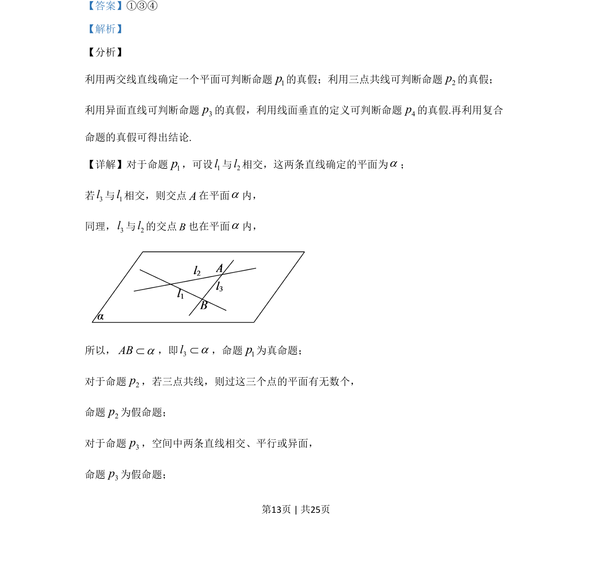

考点：空间线面关系 命题真假判断 逻辑联结词 立体几何
空间线面关系
命题真假判断
逻辑联结词
立体几何
给出四个关于空间直线与平面关系的命题p₁~p₄，判断真命题序号并给出含逻辑联结词的复合命题真假。

📄 原 PDF 第 13 页：素材/真题/吉林/2008-2024·（吉林）数学高考真题/2020年高考数学试卷（理）（新课标Ⅱ）（解析卷）.pdf
素材/真题/吉林/2008-2024·（吉林）数学高考真题/2020年高考数学试卷（理）（新课标Ⅱ）（解析卷）.pdf